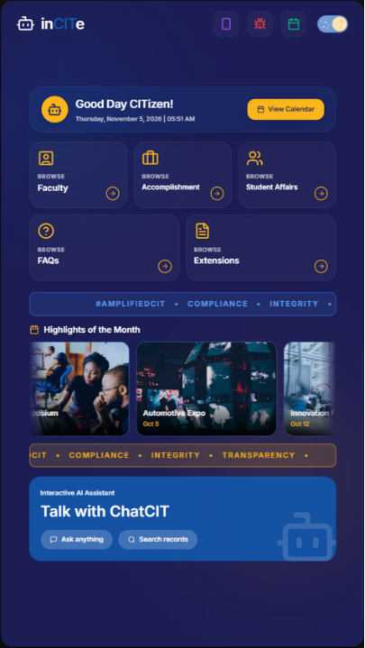
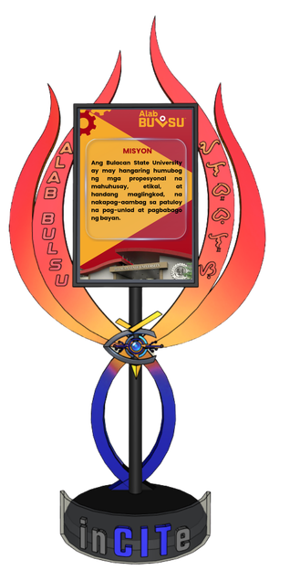

Barihan, Malolos City, Bulacan · Open for OJT from 2nd Sem, A.Y. 2026–2027
Kerstine
M. Salazar
QA Tester Intern | Designer
Hi, I'm Kerstine M. Salazar, a Computer Technology student passionate about technology, quality assurance, and creative design. I enjoy developing user-centered digital experiences, organizing information, and exploring solutions that combine functionality and creativity.
- Target Training Hours
- 600 Hours
- Availability
- Starting 2nd Semester, A.Y. 2026–2027
- Internship Position
- QA Tester Intern | Designer
About me
Hi There! I'm Kerstine M. Salazar, a Computer Technology student at Bulacan State University.
I'm passionate about design and have experience in data management and system design through my capstone project. I enjoy working with technology, organizing information, and creating functional and user-friendly digital solutions.
I'm looking forward to starting my professional career in UI/UX design, quality assurance, or data-focused roles where I can apply my skills and continue learning.
Academic profile
- Degree
- Bachelor of Industrial Technology
- Major
- Computer Technology
- School
- Bulacan State University – Main Campus
- Expected graduation
- 2027
Technical skills
Web Development
Database Management
UI/UX Design
Tools and Platforms
AI-Powered Productivity Tools
Hardware and Embedded Systems
Projects

Project image: assets/incite-project.jpgInCITe
Interactive Conversational Information Terminal Experience
Role: Data Manager & Kiosk Designer
InCITe is an AI-powered conversational information system integrated into a physical kiosk. It is designed to provide students, faculty, and staff of the College of Industrial Technology at Bulacan State University with accurate, timely, accessible, and user-friendly access to CIT-related institutional information.
GitHub repository and live demo: not yet provided.

Project image: assets/incite-prototype.jpgInCITe Prototype
Role: Designer
The InCITe prototype features a trophy-style design inspired by Bulacan State University's symbol, ALAB BulSU.
The flame represents "alab," symbolizing the burning passion and fighting spirit of every Bulakenyo. It also sounds like "I love," reflecting love for the university.
Rising from a base marked with the CIT name, the flames surround a display panel carrying the university's Mission. The emblem at the center represents technology, vision, and innovation.
Together, the design represents a community of learners who are passionate about leading, creating, and serving with excellence.
GitHub repository and live demo: not applicable / not provided.
Leadership and experience
Society of Proficient and Innovative Computer Enthusiasts (SPICE)
Bulacan State University
Officer
2023–Present
- Assist in overseeing organizational operations and coordinating activities.
- Support the implementation of organizational programs and initiatives.
Associate Director for Events and Documentations
2024–2025
- Assisted in reviewing event documentation and maintaining accurate organizational records.
Director for Communications and External Affairs
2023–2024
- Collaborated with fellow officers and external merchants to establish partnerships and support efficient organizational operations.
Event leadership and management
Event Head – SPICE-cial Love Fair: Your Purchase Spreads Love
October 2025 · Bulacan State University
- Helped organize an event supporting SPICE's community outreach efforts.
- Supported and promoted small businesses and student entrepreneurs.
- Helped establish partnerships and encourage community involvement.
Event Head – PAGODA: Pagpapayabong ng mga Aktibong Grupo para sa Oportunidad at Dangal ng Asenso
October 2025 · Office of Student Organizations and Activities (OSOA), Bulacan State University
- Led and coordinated event-related activities and preparations as an event head.
- Collaborated with SPICE in participating in a university-wide organizational event.
- Contributed to organizational coordination, merchandise preparation, and event participation.
- Helped represent SPICE, where the organization received the Top Grosser Award – Merchandise Category.
Event Head – SPICE-tacular Bazaar
February 2025 · Bulacan State University
View reference (opens Facebook in a new tab)Event Head – CTRL+START: Generating Excellence Through Advance Readiness
September 2024 · Bulacan State University
View reference (opens Facebook in a new tab)Event Head – SPICE-tacular Bazaar
February 2024 · Bulacan State University
View reference (opens Facebook in a new tab)
Certifications and training
Organizer Participant Training
- Organizer
BULACAN TECH EXPO 2025
Vista Mall Malolos (2025)
- Workshop
National Book Store x UniPin Painting Workshop
Bulacan State University – Main Campus (2025)
- Organizer
PRODUCTIVITY TIPS WITH ADOBE CREATIVE CLOUD
Bulacan State University – Main Campus (2024)
- Participant
STING: STRIVING TOWARDS INSPIRING AND NOBLE GROWTH
Bulacan State University – Main Campus (2024)
- Organizer
Comptechniques: Dive Deep: The Art of Effective Research – Techniques, Tools, and Insights
Bulacan State University – Main Campus (2024)
- Organizer
Comptechniques: BEYOND BASICS: Mastering the Complexity of Programming
Bulacan State University – Main Campus (2023)
- Organizer
Comptechniques: Augment Your Tech Knowledge in the Vital Environment of Technology
Bulacan State University – Main Campus (2023)
- Training
CITIZENS CALL: Infusing Teams with Zeal, Integrity, and Nurturing Synergy
Leadership Training
Professional references
Ms. Vinna Nina Orozco-Ramos
Organization Adviser
Society of Proficient and Innovative Computer Enthusiasts (SPICE)
Ms. Karen Alabastro
Professor
Bulacan State University
Interested in bringing me onto your team for OJT? Let's connect.
I'm currently preparing for my 600-hour internship and would love to connect with companies and professionals where I can contribute my skills, gain practical experience, and continue growing in the technology field.
Email me